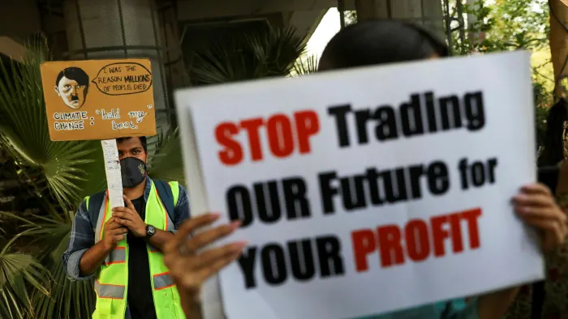

5 Climate Finance

5.1 Green Investing
Fancy
The market is the market
“The evidence on climate risk is compelling investors to reassess core assumptions about modern finance,” the BlackRock chairman, Larry Fink, wrote in his highly influential annual letter to CEOs in 2020. “In the near future – and sooner than most anticipate – there will be a significant reallocation of capital.”
But the climate crisis can never be solved by today’s free markets - because the system is built to extract profits. Investors have a fiduciary duty to maximise returns to their clients and as long as there is money to be made in activities that contribute to global warming, no amount of rhetoric about the need for sustainable investing will change that. It’s cheaper and easier to market yourself as green rather than do the long tail work of actually improving your sustainability profile. That’s expensive and if there is no penalty from the government, in the form of a carbon tax or anything else, then this market failure is going to persist.
Moving money to green investments doesn’t mean polluters will no longer find backers. The argument is similar to that of divestment, another strategy that doesn’t work. If you sell your stock in a company that has a high emissions footprint, it doesn’t matter. The company still exists, the only difference is that you don’t own them. The company is going to keep on going the way they were and there are 20 hedge funds who will buy that stock overnight. The market is the market.
The public don’t realizes we are not talking about stopping climate change. We are literally talking about selling assets so we don’t get caught up in the damage when it hits.
BAU
Under the current system the costs are simply too high and the benefits of conducting business as usual are too great.
Government led
The overarching point is that real change has to be led by government, not Wall Street.
Fancy (2021) Green investing ‘is definitely not going to work’
5.2 Sustainable Finance
Basel rules limiting the ability of banks to provide long-term, non-recourse finance to clean energy projects. Solvency rules that prevented investors from funding infrastructure and public transport. Liquidity rules that made it impossible for pension funds and life insurers to back newer technologies. Definitions of fiduciary duties that stopped pension fund trustees from taking into account ESG considerations. Accounting regulations that failed to require disclosure of climate risks. Public investment funds forced by regulators to use ratings agencies that ignored climate change.
World Economic Forum published a version of the white paper at Davos in January 2013, kicking off a heated debate among delegates and at subsequent events.
In January 2014, The United Nations Environment Programme picked up the baton, launching an Inquiry into the Design of a Sustainable Financial System, which resulted in October 2015 in a major report entitled The Financial System We Need. Then, December 2015 saw the formation of the Task Force on Climate-related Financial Disclosures (TCFD), chaired by Mike Bloomberg (founder and majority owner of Bloomberg LP) at the request of the Financial Stability Board and its (then) chair Mark Carney (governor of the Bank of England at the time). TCFD has done much to raise awareness of climate change and the need for more climate-related disclosures in financial circles.
It is now hard to argue that the financial system is institutionally fossilist. Indeed, there is a lively debate going on about whether central banks should be promoting climate action – being ‘institutionally anti-fossilist’ – or not.
A veritable smorgasbord of organizations has sprung up in recent years, promoting sustainable finance from various angles. All of them, however, depend on methodologies that are at best not transparent, and at worst downright misleading.
No amount of investment in clean energy and transportation will get the world to net zero if the capital markets continue to invest at the same time in fossil fuel-based infrastructure. Investors must also stop funding fossil assets, and they may even have to walk away from assets before the end of their productive lives. How can the capital markets contribute to, rather than impede, such decisions?
It is not up to the financial system to protect the environment: that’s the job of regulators in energy, transport, industry and so on. As soon as clean solutions made economic sense, the money would flow – but not before, because of their risks.
Central banks should stick to managing risks within the financial system posed by societal choices, not trying to manipulate the choices made by society.
Greenhouse Gas Protocol
The methodologies of the Greenhouse Gas Protocol. Originally developed 20 years ago by the World Resources Institute (WRI) and the World Business Council for Sustainable Development (WBCSD), this is the rule-book defining Scope 1, Scope 2 and Scope 3 emissions.
A quick reminder: Scope 1 are emissions from your own burning of fossil fuels or emissions of other greenhouse gases; Scope 2 are emissions embodied in purchased energy services – electricity, steam, heating and cooling; and Scope 3 are emissions elsewhere in your value chain, either upstream or downstream.
Accounting for Scope 1 and Scope 2 is relatively straightforward. A utility’s Scope 1 is a power user’s Scope 2, so if you own shares in both, there is a double-count, but it is fairly easily removed. Scope 3, however, is a whole different ball game.
Scope 3
Take the example of a sustainability consultant taking a flight as part of a client engagement. The resulting emissions would count as Scope 1 for the airline, and Scope 3 for both the provider of jet fuel and the consultant’s employer. They should also, however, be counted as Scope 3 by her client. And by the company which extracted the crude oil from which the jet fuel was produced. And by the owner of the refinery where it was refined. And the ‘fixed base operator’ who delivered the fuel to the plane. The same emissions should also be counted as Scope 3 by the owners of the departure and arrival airports, the leasing company that owns the plane, and the insurers of the oil production platform, the refinery, the airport and the aircraft – as well as the provider of the consultant’s travel insurance. Then there are the companies providing the air traffic control system, components and subassemblies of the aircraft, aircraft maintenance, airport security and catering services.
A big asset owner or asset manager might conceivably hold shares in every one of these companies. Not only that, but in addition to equity, they might own some of each company’s debt too, perhaps several issues of different maturities. And what about derivatives? If you buy a call option on a company’s stock, are you responsible for some of its emissions? A credit default swap? If you borrow stock and sell it short? If you warehouse debt as collateral for a collateralized debt obligation?
How is any investor meant to keep up with this, not on an annual or quarterly basis, but as it changes by the millisecond?
f the goal is to get executives and investors to think about the carbon intensity of the value chain to which their organizations or portfolio companies belong, and to push them to work with other value chain players to reduce emissions, this approach is great. It is clearly working, and its promoters are to be lauded.
If, however, you want to find out how many tons of carbon dioxide companies in your investment portfolio are actually emitting, or if you want to differentiate between two possible funds on the basis of their impacts on the climate, or if you want to regulate your capital markets to ensure compatibility with the Paris Agreements – then Scope 3 is simply a mess.
EU Taxonomy
The European Union, meanwhile, is plumping for a completely different approach: the EU Taxonomy for Sustainable Activities, an attempt to define a master list to make it easy to see which companies are sustainable and, by extension, which investors are backing sustainable economic activity. As so often in sustainable finance, practice and theory diverge fast.
For the average EU business, the Taxonomy will entail a level of disclosure far beyond anything found in financial statements. Taken literally, it would reveal profitability by line item, investment plans for individual plants and future project launches. The more likely outcome is that an army of accountants and consultants will ensure that data are estimated and aggregated in such a way as to meet legal requirements while revealing little of value to competitors – or investors.
Disclosure will be little more than educated guesswork – and expensive guesswork, particularly for smaller players.
From January 2022, the EU expects asset managers to use the Taxonomy to disclose the sustainability of their investments and funds.
What is needed is a way of allocating responsibility to specific players in an economic activity, which will generally be the first player in the supply chain who could have avoided causing them, but did not do so.
That is my one-line summary of the conclusions reached by the Expert Group on Climate Obligations for Corporations, a collection of 68 eminent jurists and human rights experts who have produced the Principles on Climate Obligations for Corporations (pdf). In its 372 pages they attempt to establish – in the absence of explicit law or precedent – where companies’ and investors’ legal obligations with respect to climate change are likely to lie.
Differentiate between emissions that are avoidable and those that are excessive, and take into account which player actually has control over the decisions that drive emissions.
Demand Focus
holding everyone responsible for emissions means holding no one responsible, and blaming fossil fuel producers – however egregious their past misconduct – effectively means placing the onus for climate action on those with most to lose from accelerating it. Instead of demonizing the supply of fossil fuels, we need to focus primarily on choking off demand. By demanding action on climate while maintaining demand for the products that cause it, society is sending mixed signals.
Each ton of carbon extracted anywhere in the world should automatically be tracked through the point where it is burned to the product or service for which it is used.
Distributed Ledger
Distributed ledger technology could have been designed with a job like this in mind, as the OECD acknowledges in this white paper (pdf), particularly in the era of satellite technology, sensor networks, big data and machine learning. Knowing exactly what is emitted and who is responsible will be a game-changer.
The long-term shift of climate risk from fuzzy and voluntary ESG reports to quantified and regulated financial statements will mark a huge inflection point in the history of climate action.
Focusing responsibility for Scope 3 emissions on those who make the decisions that cause them, and ensuring that risks are quantified and included in financial reports, will do a huge amount to drive capital into decarbonizing the global economy.
None of the currently available carbon accounting methodologies focuses corporations unequivocally on the two goals: reducing controllable emissions and developing high-quality offsets capturing carbon and sequestering it permanently.
The world will never get to net zero if avoided emissions count.
Where developing world countries require incentives to avoid deforestation or leave fossil fuels in the ground, these must be provided by governments, not private players.
If we can accelerate these four trends – transparently allocating emissions to the organizations causing them; integrating climate risk into financial reporting; extending carbon pricing; and focusing on net zero – we can build a sustainable financial system. A future in which the health of the capital markets is not in opposition to the health of the planet.
5.3 Financial Stability
FED Note
Climate change-related financial risks pose both micro- and macroprudential concerns, but analysis and research is at an early stage. This Note describes an approach to understanding how risks arising from climate change may affect financial stability, and connects this discussion to the financial stability monitoring framework described in the Federal Reserve’s Financial Stability Reports. That framework distinguishes between shocks to the financial system and economy, which are difficult to predict, and vulnerabilities, which are underlying features of an economic or financial system that can amplify the negative effects of shocks. We describe how climate-related risks may emerge both as shocks and as vulnerabilities that could amplify the effects of climate-change related shocks or other shocks.
This analysis offers a way to assess the financial stability impact of risks resulting from climate change as information on the nature, extent, and timing of those risks improves. Our approach to describing climate-related financial stability risks is complementary to, though both simpler and broader than, the existing international typology described in Carney (2015).
We offer three main conclusions. First, the Federal Reserve’s financial stability monitoring framework is flexible enough to broadly incorporate many key elements of climate-related risks. Second, although we believe that climate change increases financial stability risks, more research and analysis is needed to incorporate these risks fully into financial stability monitoring, including substantial improvements in data and models. Third, domestic and international transparency efforts around climate-related financial exposures may help clarify the nature and scope of financial stability risks related to climate change.
In principle, quantifying climate-related risks should be similar to quantifying other financial stability risks. In practice, however, climate-related risks face several challenges to measurement beyond those associated with conventional financial system vulnerabilities and potential shocks, and which will require investment to address. These climate-related features impair not only estimation and modeling at the level of the overall economy, but also the analysis of region-, sector-, asset-, institution-, and investor-level exposures. Investment in data procurement, and careful analysis of climate-related data to describe specific economic and financial risks, is critical to addressing these challenges and producing high-quality research on climate-related outcomes.
A fundamental challenge relates to merging and cleaning climate-related data for use in economic models.24 Availability of sufficiently granular spatiotemporal and climate-related financial data is limited, including information on exposure to physical hazards or the emission levels of activities associated with particular investments or financial institutions. Investors or researchers hoping to assess the financial impacts of climate-related risks must often use proxies involving spatiotemporal weather data.
Models that seek to link climate directly to economic output involve a separate set of challenges. Climate models typically simulate the interaction of a wide range of variables over many decades. In addition, the effects of climate change on economic activity may involve heterogeneous local or regional effects. These factors introduce uncertainty into even short- and medium-term projections, making aggregate climate models an imprecise source of information for near-term economic estimates and risk assessment.
Deeper analysis of the specific channels by which climate-related risks create hidden vulnerabilities in the financial sector will be an especially important topic for exploration.
FED Note on Climate Risk and Financial Stability
To take action, central banks must decide on some strategic issues Central banks can formulate a clear strategic view on their tolerance of climate-related risks and decide how forward- looking they wish their frameworks to be.
Central banks need to form a clear opinion surrounding the appropriateness of various climate-related metrics in order to adjust their operational frameworks. At the current juncture, in the absence of reliable and commonly agreed ways of putting a price tag on climate-related risks, central banks wishing to act may have no choice but to consider using non-financial climate-related metrics as a pragmatic starting point. Central banks should develop policies to monitor and manage issues surrounding data quality and availability. The limited availability and accuracy of relevant data is currently constraining virtually all climate-related risk metrics.
NGFS Adapting Central Bank Operations to a hotter World (pdf)
5.3.1 Methods and Data
Battison
Climate change has been recently recognised as a new source of risk for the financial system. Over the last years, several central banks and financial supervisors have recommended that investors and financial institutions need to assess their exposure to climate-related financial risks. Central banks and financial supervisors have also started designing climate stress tests that can assess how vulnerable the financial system is to climate change. Nevertheless, the financial community falls short of methodologies that allow the successful analysis of the risks that climate change poses to the financial system.
Indeed, the characteristics of climate risks (i.e., deep uncertainty, non-linearity and endogeneity) challenge traditional approaches to macroeconomic and financial risk analysis.
Embedding climate change in macroeconomic and financial analysis using innovative perspectives is fundamental for a comprehensive understanding of risks and opportunities in the era of the climate crisis.
This Special Issue is devoted to the relation between climate risks and financial stability and represents the first comprehensive attempt to fill methodological gaps in this area and to shed light on the financial implications of climate change. It includes original contributions that use a range of methodologies ̶ such as network modelling, dynamic evolutionary macroeconomic modelling and financial econometrics ̶ to analyse climate-related financial risks and the implications of financial policies and instruments aiming at the low-carbon transition. The research insights of these contributions can inform the decisions of central banks and financial supervisors about the integration of climate change considerations into their policies and financial risk assessment.
Battison (2021) Climate Risk and Financial Stability (Paywall)